Every frame format
360° and 180°, 3D top/bottom and side‑by‑side (VR180), a flat 2D screen. The format comes from the file name or is picked with one tap and remembered for each video. Up to 8K — within the Quest hardware decoder.
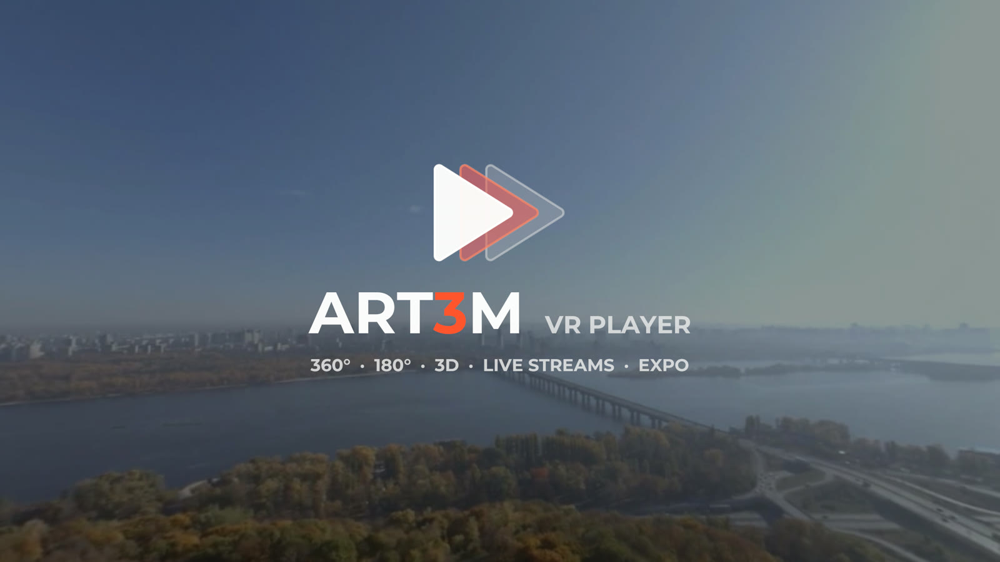
360° and 180°, 3D top/bottom and side‑by‑side (VR180), a flat 2D screen. The format comes from the file name or is picked with one tap and remembered for each video. Up to 8K — within the Quest hardware decoder.
HLS, DASH, RTSP, RTMP and WebRTC (WHEP) with under a second of delay. Add a stream with a simple form — server, port, stream name. If the connection drops, the player waits and reconnects by itself.
Share a folder on Windows or Mac and watch videos without a cable — or download a heavy file to the headset. The player remembers the last folder, and the setup guide is right on the screen.
Tiles with thumbnails, duration, resolution and a “watched” mark; filters for video, photo and live. Videos from any headset folder or a USB drive. .srt / .vtt subtitles next to the file.
Turn, tilt, level the horizon with a horizon grid; brightness and contrast; File info (codec, bit rate, colour and HDR, spatial metadata); histogram and zebra; playback statistics; compare two versions; notes with timecode.
Visitors never see the menu: tiles, one video on loop, a playlist or a live stream. A three‑step wizard, an exit for the operator only (gesture + PIN), a new viewer as soon as the headset is put on. Set up one headset and copy the folder to the rest.
Controller in hand — ray and trigger; no controller — just look at a button. The “?” next to complex settings explains them in plain words. The interface speaks English and Ukrainian.
No accounts, ads or cloud. The internet is only needed for streams. An anonymous journal of how the player works stays on the headset — you decide whether to send a report.
The mode is switched in the settings header and decides what people see, how many settings there are and how to exit.
For people who just watch: at home, with friends, at a presentation.
For operators, editors and 360 filmmakers.
For booths, museums, exhibitions: visitors never see the menu.
A dozen 360 city videos, a queue of visitors, one operator for several headsets.
Expo · tiles. Visitors pick a video and come back to the tiles after it. Headset off — the next person starts from the beginning.
One film, no interface at all, all day long.
Expo · one video. A clean frame: no panels, no cursor. Seamless loop and a reset when the headset lies still for a while.
A 360 camera on stage, a laptop with a streaming server, viewers in headsets in the hall.
RTMP · RTSP · HLS · WebRTC. A drop — “The stream will start soon” and an automatic reconnect.
Are the metadata right, is the horizon level, is it HDR, can Quest handle the bit rate?
Pro · File info, Light, Check. Notes with timecode are saved next to the video.
An agency shows a finished project in the meeting room — straight from a laptop over Wi‑Fi.
Computer on the network or Expo · playlist. Turn and format are remembered for each video.
Someone puts on a Quest for the first time and wants to watch their own 360 videos from a phone or camera.
Simple. Copy to a folder and watch. Gaze control without a controller.
Glass panels over the video. The images are rendered from the same code that runs in the headset.
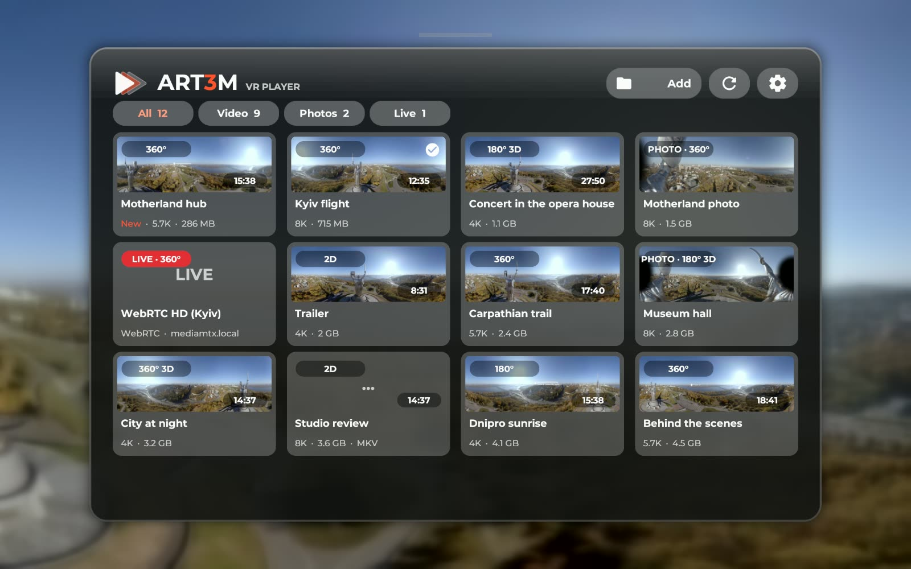
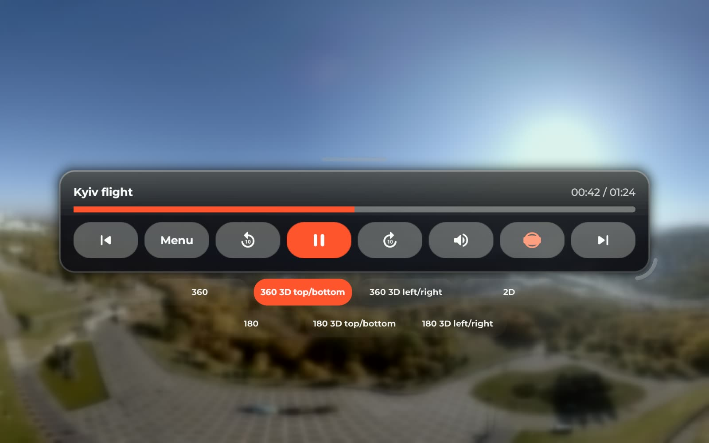
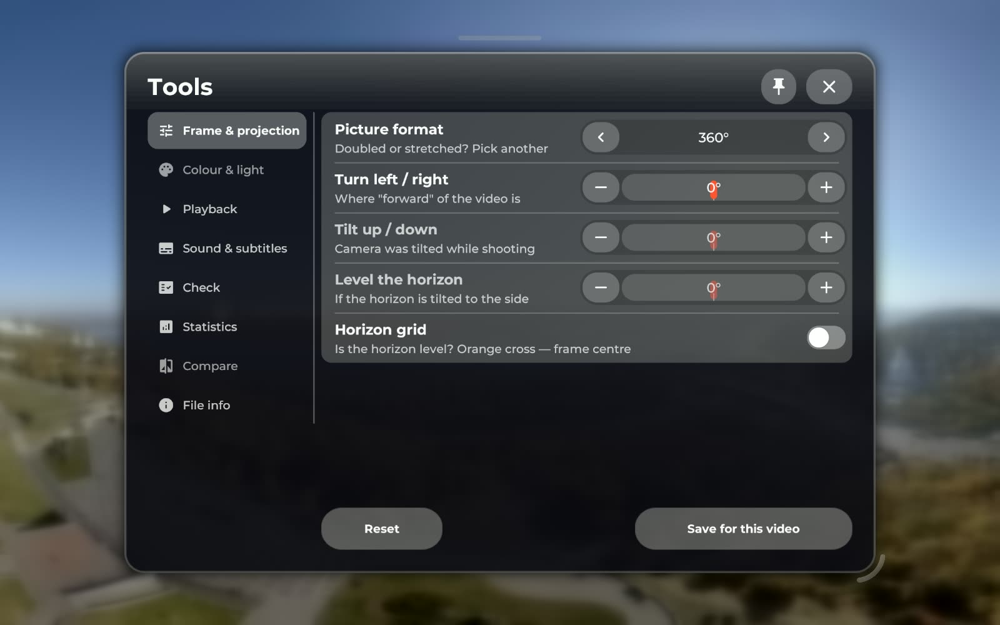
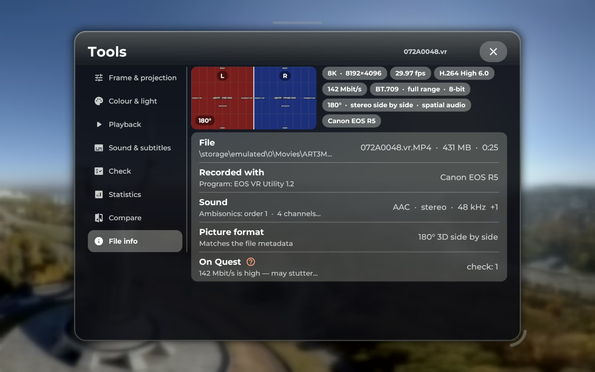
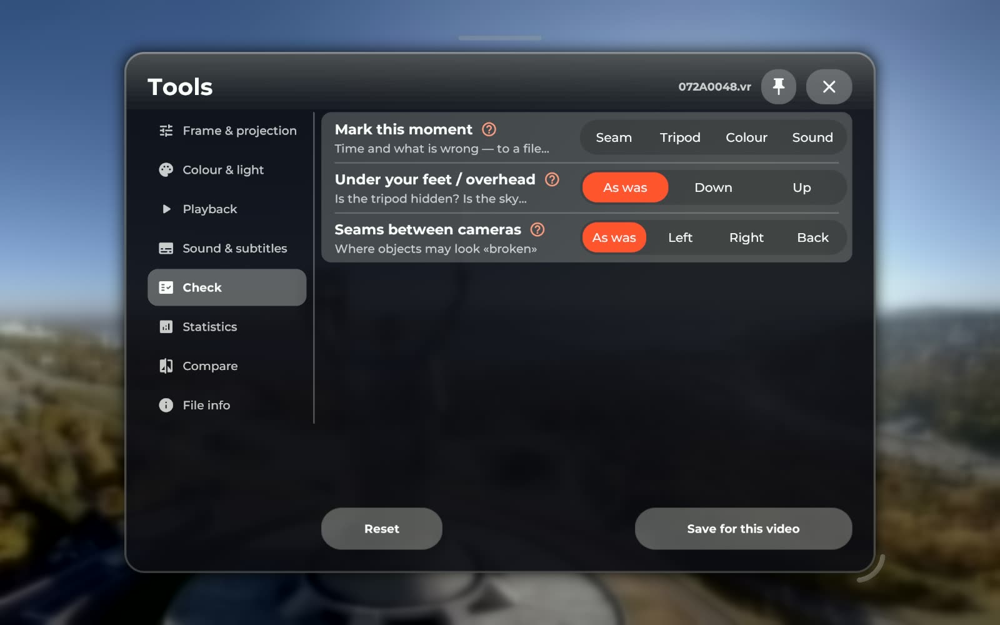
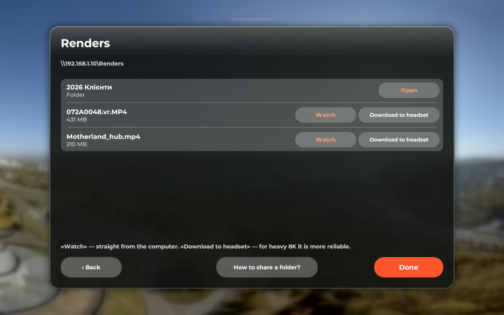
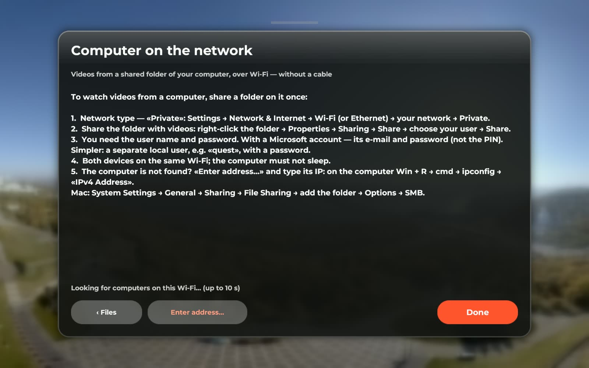
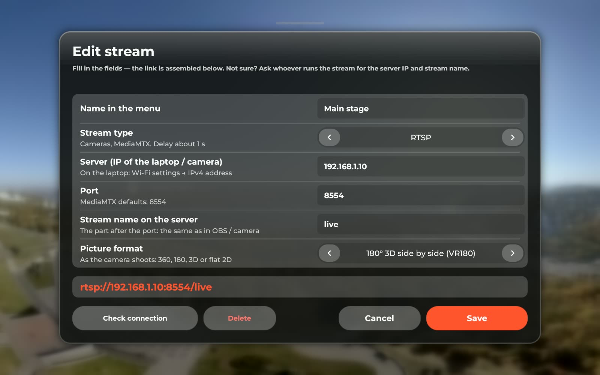
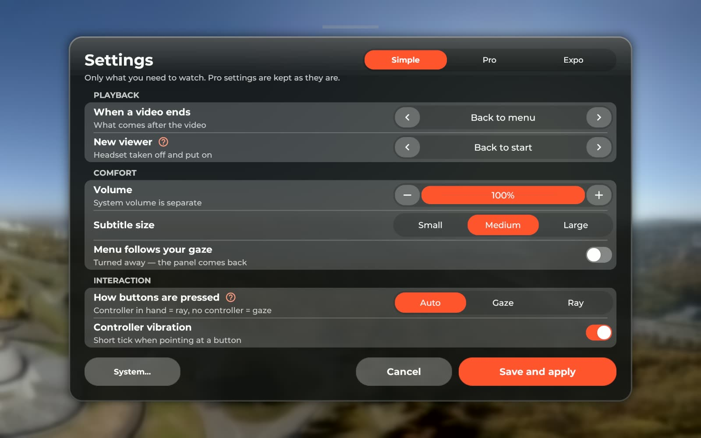
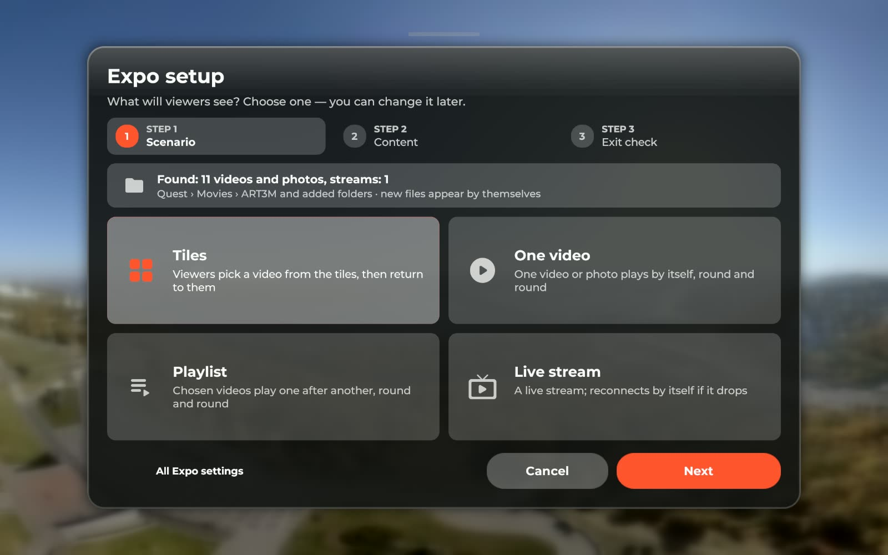
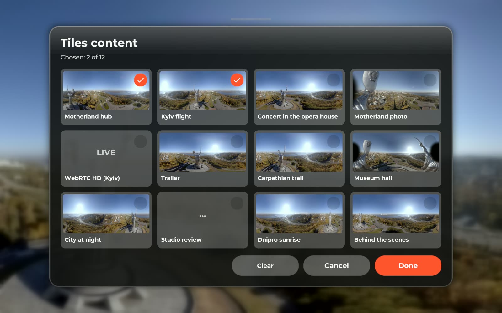
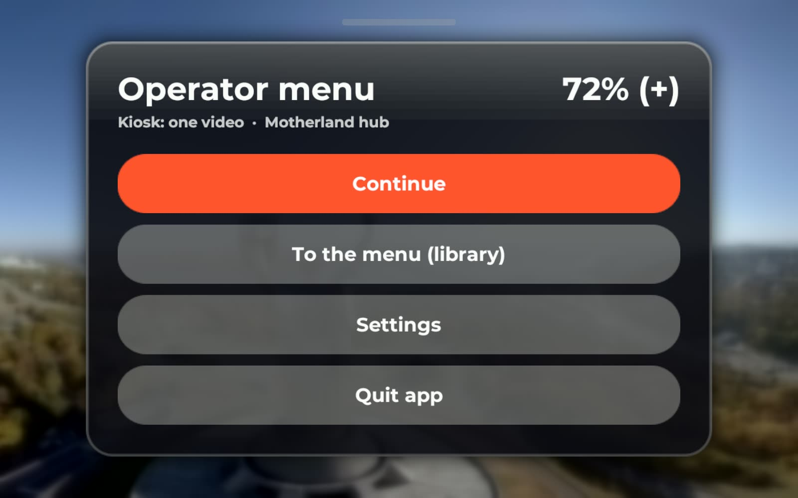
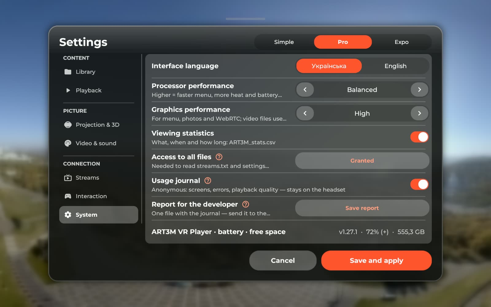
ART3M VR Player is in a closed alpha test on the Meta Horizon Store. We are looking for people who shoot, edit and show 360 video or run events with live streams — from any country. You need a Meta Quest 2, Pro, 3 or 3S.
Quest › Movies › ART3M._180, _TB (3D top/bottom), _LR (3D side‑by‑side), _2D. Or pick the format with the button while watching.No cable: Add → Computer on Wi‑Fi… — videos from a shared Windows or Mac folder.
| Scenario | What to check |
|---|---|
| 1. Videos on the headset | Tiles with thumbnails; a video starts quickly; looking forward = the front of the video; the panel opens with the trigger or by looking down. |
| 2. Formats | During a video, the format button: 360 / 180 / 3D / 2D. The choice is remembered for that video. |
| 3. Computer on the network | Add → Computer on Wi‑Fi… → find or enter your PC → sign in → open a folder → Watch and Download to headset. |
| 4. Live stream | If you have a server (OBS, MediaMTX…): Settings → Streams → Add → Watch. Turn the server off and on — the player should wait by itself. |
| 5. Modes | Settings header: Simple / Pro / Expo. In Expo go through the wizard, test the exit gesture and start the show. |
| 6. Headset off and on | Take the headset off in the middle of a video and put it back on. |
Quest › Movies › ART3M › reports › ART3M_report_DATE.jsonl.Movies/ART3M/reports.On a Mac use Android File Transfer or OpenMTP.Quest › Oculus › Screenshots.The journal is never sent anywhere by itself. You can turn it off in Settings → System → Usage journal.